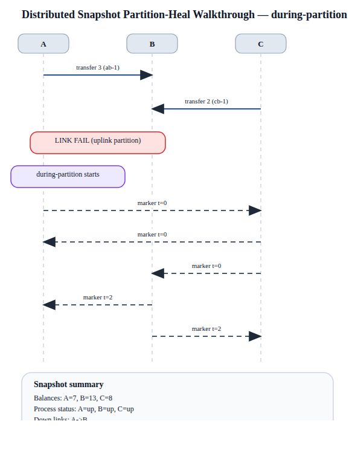
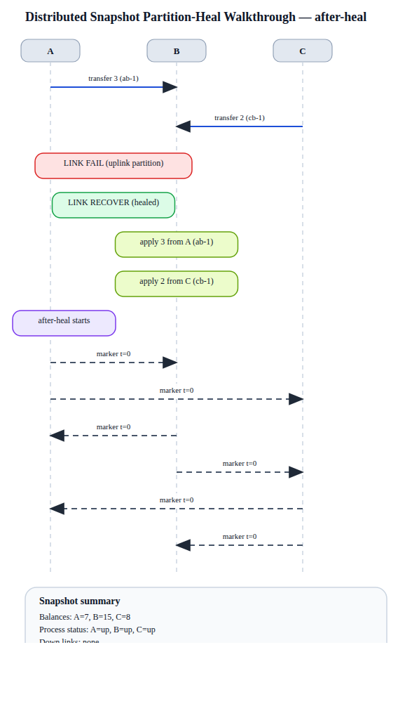

Processes
A, B, C
A single-page handout for the distributed snapshot partition/heal scenario. It bundles the scenario summary, ordered timeline, per-snapshot analysis, and links to the committed SVG/PNG artifacts so the lab is easy to publish or review without opening multiple files.

sequenceDiagram
participant A
participant B
participant C
A->>B: transfer 3 (ab-1)
C->>B: transfer 2 (cb-1)
Note over A,B: LINK FAIL (uplink partition)
Note over A: during-partition starts
A-->>C: marker t=0
C-->>A: marker t=0
C-->>B: marker t=0
B-->>A: marker t=2
B-->>C: marker t=2
Note over A,B,C: snapshot balances A=7, B=13, C=8
Note over A,B,C: process status A=up, B=up, C=up
Note over A,B,C: down links A->B
Note over C,B: recorded in-flight on C->B 2 (cb-1)
Note over A,B,C: consistent=True snapshot_total=30 system_total=30
sequenceDiagram
participant A
participant B
participant C
A->>B: transfer 3 (ab-1)
C->>B: transfer 2 (cb-1)
Note over A,B: LINK FAIL (uplink partition)
Note over A,B: LINK RECOVER (healed)
Note over B: apply 3 from A (ab-1)
Note over B: apply 2 from C (cb-1)
Note over A: after-heal starts
A-->>B: marker t=0
A-->>C: marker t=0
B-->>A: marker t=0
B-->>C: marker t=0
C-->>A: marker t=0
C-->>B: marker t=0
Note over A,B,C: snapshot balances A=7, B=15, C=8
Note over A,B,C: process status A=up, B=up, C=up
Note over A,B,C: no recorded in-flight channel messages
Note over A,B,C: consistent=True snapshot_total=30 system_total=30{kind=link}
{kind=link}
{kind=link}
{kind=link}